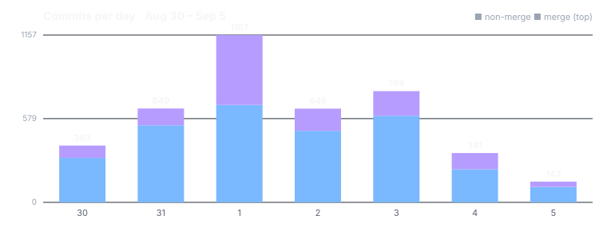

Four things changed this week
One per area; the first three have their own article or section below.
A group belongs to its members, not its creator
Creating a shared space now makes you its first steward, not its owner. Belonging and governing became two separate credentials, so a founder can be stepped down to an ordinary member instead of only removed.
Photo search reads the whole sentence
"Next to" is measured from where two faces sit, "his friend" must be the friend you named, and a vision model on your own machine writes a sentence about each photo, rather than a cloud service.
Rules on imported data now follow it
Shared content can say "no model may read this" or "local models only". That rule now follows imported content and holds at search and at group queries, and a rule that cannot be read means withhold. Content with no rule stays readable by any model.
You decide how much of your machine the build system gets
Lending a computer to your group's build system now comes with a declared share of its processors and memory. It is signed, stored on your own device, and the default is the whole machine.
Groups belong to their members
The feature: who is allowed to act in a shared space — a hive, or a channel inside one. Each keeps its history on a chain: an append-only record where every entry is signed by its author, so anyone holding a copy can check who did what.
Before: many chains carried an owner identity, and a great deal of code asked "is this the owner?" before anything else. Now: creating a space issues you a steward credential and a membership credential, and the design is that you are then an ordinary steward like anyone else who holds one. Writes to a group's rules and content are now decided by the steward credential, not by who created the group; other checks across the codebase still read the owner field and are being moved over.
A credential here is a signed record naming a person and a role, issued under the space's own rules and revocable by them. That is the whole difference from an owner field. A field is a fact about the past. A credential is a claim the group keeps standing, or withdraws.
flowchart LR P[A person] -->|holds| M[Membership credential] P -->|may also hold| S[Steward credential] M --> A[Takes part in the space] S --> G[Takes part in governing it] S -. revoked .-> D[Still a member: stepped down
shown for the founder so far] M -. revoked .-> R[Leaves the space]
Two credentials, because two acts
The owner's ruling on 2 September was short: members hold a membership credential, and only stewards govern. Someone can go from steward to plain member and stay, or leave altogether, and both moves must be possible from the app and from the command line.
Until that day, founding a space issued only the steward credential. Revoke it and the founder held nothing, so a founder could be expelled but never demoted. Founding now issues both, with fixed identifiers, so replaying the space's history lands on the same records rather than minting a second pair.
The same issuing step now runs in one place for every kind of chain. A channel created on its own gets the same two credentials as a hive. Your personal record does not, because one person's key already decides everything there.
Measure before you enforce
Switching every "is this the owner?" check at once would lock people out of spaces they rightly belong to. So the first step, ninety minutes before the first check was switched, was a comparison: at the point a write is checked, the system also works out the old owner-based answer and logs every disagreement, in both directions.
It also refuses to round off doubt: a failed lookup is recorded as "could not check", never as "not a steward". One earlier measurement had found 81 of 81 membership records on a machine carrying no credential reference at all. A rule that demanded one on day one would have refused all of them.
Details in A group belongs to its members. The companion piece, Authority is what you hold now, covers the harder half: a revoked steward loses the power to act at once, but revoking one does not lower the number of stewards who must agree. That final form reached the main line on 24 September. The week's earlier article on how a new member is actually given the ability to sign, Adding someone is not a row in a table, is the groundwork for all of this.
Shared spaces — 145 changes.
Photo search that checks each part of the question
The feature: asking your own photo library a plain-language question — "show me Maya sitting next to Tom in a red car" — and getting only photos for which every part is true.
Before: every word was matched as text, and the filler words matched too. Now: each part of the sentence is its own claim about the picture, checked in its own way, and the filler words count for nothing.
What each word has to prove
The owner's test sentence, run against a library holding only a photo that satisfied none of its parts, used to return that photo. Ten of its 21 words were connectives, and "a" alone matched "Marrakech". Connectives are now dropped before matching.
- "His friend Tom" used to accept any friend. The relation still decides who can match; the name now picks among the people who passed it. Name someone who is not a friend, and nothing matches.
- "Sitting next to" is measured from the two face boxes — their distance and relative size. Left and right are deliberately not offered, because a rotated photo keeps its old face boxes and would get them wrong.
- "In Seattle" now finds a photo filed under one of its neighbourhoods; on the week's own test set, recall went from 4 of 10 to 9 of 10.
A sentence written on your own machine
Before this week, the only model providers that could look at an image were two cloud services, so "describe this photo" could only mean uploading it. A local vision model can now write the description instead. A text-only model is refused rather than handed a photo, and a photo marked local-only cannot be routed to a cloud model. With no vision model installed, there is simply no description.
That description can also start a follow-on plan. When it mentions a bird, a bird plan runs; categories are plain data a package adds. Inside, a species step names a species only when it is sure, and otherwise says "bird".
That last rule came from a measurement. On real photos, a first version called an office building and a solid red square the same ladybird, both at 93%. A specialist trained on species names cannot also be the judge of whether any animal is there, so that question moved to the general description.
Status: built and tested on 3 and 4 September. The species plans reached the main line on 18 September, and the photo-search changes on 23 September. The full stories: Show me the photo where… and When a bird walks into the photo.
Photos — 90 changes. Photo flow plans and execution — 55.
What this means, in plain terms
Five general lessons the week paid for, each first learned by getting it wrong somewhere.
"I could not read the rule" is not "the rule allows it"
When a group query met contract terms it could not parse, it logged a note and passed the content to a model. It now withholds that content and counts the withholding. Damaged or hostile metadata is exactly when a gate matters most. When a permission check cannot read its input, the answer is no — and counted.
Store authority as something that can be withdrawn
A creator field recorded who pressed create, forever. A steward credential is issued, held and revocable, and the founder is simply its first holder. For a founder, that turned "demote" from impossible into one revocation. Record authority as a present-tense claim, not as a fact about the past.
A default nobody chose is not a setting
One machine's build containers got 4 of its 16 cores; another's got all 32 of 32. One came from a container tool's default size, the other from the absence of a limit. Neither was a decision. The share is now declared, and undeclared means the whole machine. If a number governs behaviour, someone should have picked it.
A classifier that must answer will invent one
A species model must spread its confidence across the species it knows, so a photo with no animal still gets a confident species. Two fixes: a species is named only when it clearly beats the background labels, and whether any animal is present at all is decided by the general vision step. Give every classifier a way to say less.
Grant the one exception, not the subscription
The person who reported a bug could not install the test build that fixed it, because their device follows stable releases. Moving them to every test build would work once and be wrong forever. Instead, exactly one build is exempted, under six conditions, still countersigned. Scope an exception to the case that justified it.
How much healthier is it than a week ago?
The previous window, measured the same way: 4,548 commits (1,904 merges) and 6,078 files. The first three rows are read from the main line as it stood at midnight on each boundary; the last two count work by the day it was committed. This week the two clocks disagree by weeks, and the notes below say where.
shared spaces began trading owners for credentials, photo search started checking each claim in a question, rules attached to data began to follow it through search, and the checker's skip list grew again.
Five honest notes
- Most of this work reached the main line later, mostly between 18 and 24 September.
- The credential rule covers some checks, not all. Group writes are decided by the steward credential; many other checks still read the owner field. Stepping down or removing someone other than the founder does not yet work, and the commands refuse rather than pretend.
- Photo descriptions need a local vision model installed. Without one there is no description; there is no cloud fallback by design.
- The skip markers moved the wrong way again, by 48, to 17,382.
- There is no dispatch for the three weeks before this one, so these opening figures are not the last dispatch's closing ones.
What changed, area by area
Files touched by the week's commits under each area's own folder, largest first. Commits that each touched more than 150 files — renames, a formatting sweep, re-applied branches — are left out so they cannot swamp the counts.
The largest areas — 986 down to 224 changes
Part of it is the credential work above; the largest single changes were test-file renames.
A newly accepted member's read access now rests on the acceptance already recorded on their own device, not on a sync from the other side, and a race during onboarding while the vault re-keys got a bounded retry.
The command-line tool now resolves its request timeout on every call, where the setting had been read once and then ignored.
The graph query command gained a group-by census, and a refusal on the command line now exits with an error instead of success.
Build stages now stream real progress instead of buffering it, test selection was unified into one path, and a read that returns nothing is told apart from one that failed.
A stage's silence budget now measures processor progress as a rate; as a tick count it could never fire.
A read that exits cleanly and prints nothing is treated as truncated, not as an answer, and the pool size can change without a restart.
The person who reported a bug may install the one test build that names their report, still countersigned, without moving onto every test build.
Emergency revocation of a developer key began checking the live steward credential.
Channels got their own settings panel, separate from the hive's.
Inheriting the hive's membership is now the default for every channel created inside a hive, and the panel says so.
A newly joined build machine could not enrol: the signing share it makes for itself was queued, and the queue only ran when that machine sent a chat message or started a call.
It now runs before enrolment. The machine picker now weighs cores and memory, not only how busy a machine is.
The next tier — 145 down to 100 changes
Founding a space issues both a membership and a steward credential, and one issuing step serves every kind of chain.
A revocation whose target cannot be found now fails loudly instead of doing nothing.
The channel settings panel, and channel votes reading the credential alongside the older role field.
A role's tools now come from that role's own file and nothing else.
By owner ruling, the chat picker may select only the chat, growth-communications and coding roles, enforced at one server check.
An imported pack's rule about which models may read it now follows its contents after import, not only the import itself.
The seam a pixel classifier needs to receive an image, and packages may now contribute their own default flow plans.
Smaller areas — 90 down to 32 changes
Photo questions are checked part by part, and a local vision model can describe each picture.
EXIF orientation is now read, so stored face positions can be reconciled with the way a photo is displayed.
A cold report — one no session has ever worked on — now starts a triage agent.
The report's title is scanned like its body before any agent reads it. The week's article on the report itself: The bug report you read before you send it .
Their copies of the browser app were regenerated to match it, and carry the new channel panel.
The cold-report triage now starts as a direct agent call with a pinned model, instead of waiting on a session to wake.
The search engine can now report that nothing mentions a word, with the nearest matches beneath.
A topic a model inferred from a document stopped counting as a mention.
The change list now says when a finished change ended and why it ended.
Background from earlier in the week: A pipeline with no approval step .
Charts gained numbered axes, the status strip names which check failed, and one slow probe that had used two-thirds of the sampling slots got its own cadence.
Both checks of whether a model runs locally now fail closed, in both directions.
A plan step placed on this machine names the machine's own device identity, or says it could not, and queue-wait time reaches the run detail.
The declared build-system share, and a refusal from the machine now shows in the devices screen instead of a success message.
An invited person must prove control of the identity they claim.
An attendee's raw identifier no longer shows in the calendar view.
A new founder's signing shares were copied into the vault only after the first restart.
They are now copied right after onboarding, so a backup taken before any restart still carries them.
Every other area moved by fewer than 70 files, mostly through test renames and codebase-wide checks: plans (64), AI chat (57), calling (56), and a long tail. Two exceptions: the messaging bridges (66) moved into their own package, and the workloads package (53) was retired. The week's local-model article, Coding with more context than the machine has memory for, describes work from before this window.
The areas that did not move
QUIET · 4 WEEKS — one file, touched by a codebase-wide configuration change.
No feature work since 5 August.
QUIET · 3 WEEKS — the same single configuration file.
No feature work since 14 August.
QUIET · 6 WEEKS — nothing since 20 July.
QUIET · 11 WEEKS — nothing since 19 June.